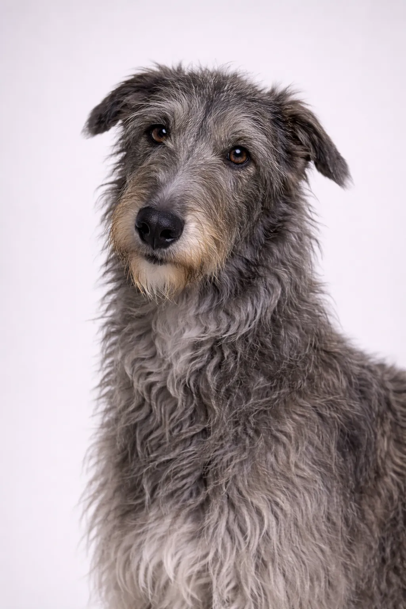

Skotsk Hjorthund
En mjuk, värdig jättelik ras som är en underbar följeslagare.
28-32 in
75-110 lbs
Rasbetyg
Temperament
Översikt
Skottlands kungliga hund, Deerhounds är mjuka och värdiga myndhundar. Trots sin imponerande storlek är de lugna och artiga inomhus.
Temperament
Skotsk Hjorthund är känd för att vara mild, värdig och artig. De är utmärkta med barn och gör sig bra som familjehundar. Tidig socialisering hjälper dem att bli välbalanserade sällskapshundar.
Hälsa
Generellt sett en frisk ras med en livslängd på 8–11 år. Vanliga hälsoproblem inkluderar höftledsdysplasi och magsäcksvred. Regelbundna veterinärkontroller och förebyggande vård är viktigt. En hälsosam vikt hjälper till att förebygga många hälsoproblem.
Motion
Måttliga motionsbehov med dagliga promenader och regelbundna lekstunder. De trivs med en kombination av fysisk aktivitet och avkoppling. Interaktiva lekar och träningspass ger mental stimulering. En regelbunden motionsrutin håller dem friska och lyckliga.
⦿ Passar Denna Ras för Dig?
✓ Bäst För
- De som vill ha en mjuk giant
- Lugna hushåll
- Landsbygdshem
✗ Inte Idealt För
- Små utrymmen
- Hem med små husdjur
Vårt Omdöme: Skottlands kungliga hund, Deerhounds är mjuka och värdiga myndhundar. Trots sin imponerande storlek är de lugna och artiga inomhus.